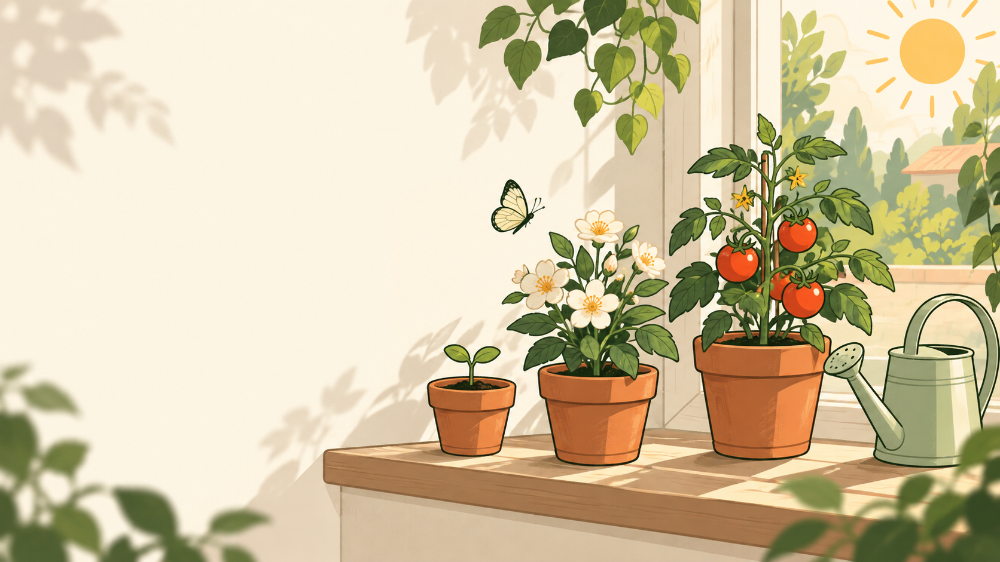

весенний сезон · советы по уходу
Вырасти свой сад с умом
Всё о садовых растениях — от посева до урожая. Советы, каталог и уход для вашего идеального сада.
более 500 растений в каталоге
овощи
цветы
деревья
травы
кустарники